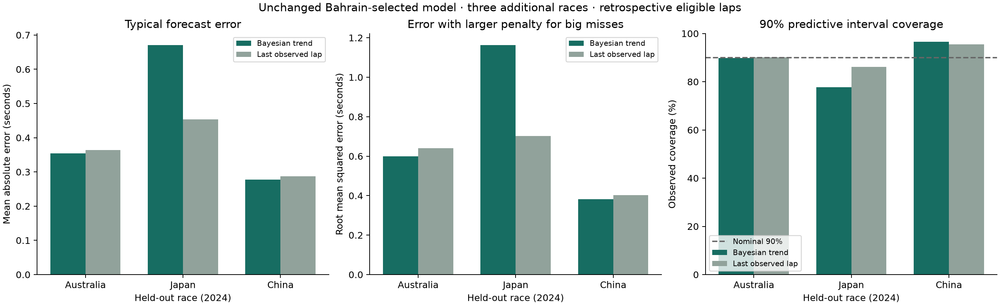

Research prototype / experiment 04
Does the result hold across more races?
Australia, Japan and China 2024 were selected chronologically before downloading. Model settings, baseline settings and filters stayed unchanged from the Bahrain development experiment.
Next: robust revision on three fresh races · Earlier Saudi Arabia test · Recorded results · Export figure
The new three-race test
MAE is average absolute error; RMSE gives larger misses more weight. Lower is better for both. The primary RMSE summary is the mean of each race’s RMSE, not the square root of a pooled error average. Coverage target is 90%.
Source: FastF1 historical race timing, 2024 Grands Prix; forecasts generated using the frozen v0.3 model. Only eligible within-stint observations after three earlier eligible laps are scored.
Every race stays visible
Saudi Arabia’s earlier result remains separate. No race was dropped because the model performed badly, and no post-test adjustments were made.
Inspect the largest misses
These are the five largest absolute prediction errors for the Bayesian model in the selected race. They are retained in every reported metric. This view describes failures; it does not establish whether traffic, driver behaviour, track changes or another factor caused them.
A concrete failure to investigate
In Japan, GAS’s first eligible lap in stint 2 was 138.362 seconds, followed by 99.925 and 99.473 seconds. These observations all passed the existing filters. By lap 8, the model had learned an implausible −3.353 s/lap trend and predicted 95.496 seconds; the observed lap was 101.363 seconds.
This is evidence of initialization being distorted by an unusual observation. It does not establish the physical cause or explain every Japan error. The observation and its downstream misses remain in the recorded evaluation.
Research status
The model predicts net pace, not separately identified tyre wear. Eligibility uses retrospective quality flags, and green-flag dry-compound filtering excludes other race conditions. With only three new races, these are descriptive results without a population-level significance claim.
Before claiming pit-strategy benefits, we need reliable uncertainty across race conditions, a defensible tyre interpretation and a validated counterfactual simulator. Any redesign informed by these results must use new races for its next held-out test.